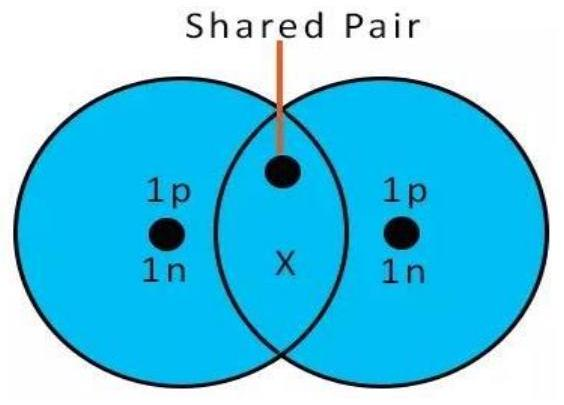

CHAPTER 8
STRUCTURE OF THE ATOM AND THE PERIODIC TABLE
8.1 The Atom
- Refers to the smallest particle of an element that can take part in a chemical reaction;
- It has an average diameter of $10^{-8} \mathrm{~cm}$ with a nucleus of about $10^{-13} \mathrm{~cm}$;Parts of an Atom
- The atom is made of two main parts:
- The nucleus
- The energy levels;
a) The nucleus
- Is the positively charged part of an atom;
- The nucleus contains two subatomic particles; neutrons and protons;
- The positive charge is due to presence of protons;
- The nuclei of all atoms contain neutrons except the hydrogen atom;
- The protons and the neutrons are together referred to as the nucleons;
b) The energy levels
- They contain the electrons;
- Electrons are so small and move so fast that their path cannot be traced directly;
- Thus, the energy level simple represents the region where the electrons are most likely to be found;
8.1.1 Structure of the Atom
- The atom can be split into smaller particles termed the sub-atomic particles; The sub-atomic particles.
- Are generally three:
- Protons;
- Neutrons;
- Protons;
a) Protons
- Are the positively charged sub-atomic particles;
- Are found in the nucleus and thus form part of the nucleons;
- The number of protons in the nucleus is equal to the number of electrons in the energy levels;
b) Neutrons
- Are neutrally charged sub-atomic particles found in the nucleus of the atom;
- They are thought to probably prevent the positively charged protons from getting too close to each other;
c) Electrons
- Are negatively charged sub-atomic particles found in the energy levels;
- The number of electrons in the energy levels is equal to the number of protons in the nucleus;
- This makes the atom to be electrically neutral;
- Atomic Number and Mass Number
8.1.2 Atomic number
- Refers to the number of protons in the nucleus of an atom;
Examples
- Sodium has 11 protons in the nucleus and thus said to have atomic number 11;
- Chlorine has 17 protons in the nucleus and thus said to have atomic number 17;
- Is conventionally represented as a superscript to the left of the symbol;
Examples:
- Sodium; ${ }_{11} \mathrm{Na}$ ;
- Magnesium ${ }_{12} \mathrm{Mg}$ ;
Mass number;
- Refers to the sum of the number of protons and neutrons in an atom of an element.
Examples:
- Sodium has 2 neutrons and 11 protons hence a mass number of 23;
- Chlorine has 18 neutrons and 17 protons hence a mass number of 35.
- Is conventionally represented as a superscript to the left of the symbol;
Examples:
- Sodium; ${ }^{23} \mathrm{Na}$ ;
- Magnesium ${ }^{24} \mathrm{Mg}$ ;
8.1.3 Notation of Atomic Number and Mass Number
- Both atomic number and mass number of an element can be written along with the symbol of an element;
Thus, the elements can be conventionally represented as:
- Sodium ${ }_{11}^{23} \mathrm{Na}$
- Magnesium ${ }_{12}^{24} \mathrm{Mg}$
- Atomic Properties of the First 20 Elements.
| Element | Symbol | Number of electrons | Number of protons | Number Of neutrons | Atomic number | Mass number |
|---|---|---|---|---|---|---|
| Hydrogen | H | 1 | 1 | 0 | 1 | 1 |
| Helium | He | 2 | 2 | 2 | 2 | 4 |
| Lithium | Li | 3 | 3 | 4 | 3 | 7 |
| Beryllium | Be | 4 | 4 | 5 | 4 | 9 |
| Boron | B | 5 | 5 | 6 | 5 | 11 |
| Carbon | C | 6 | 6 | 6 | 6 | 12 |
| Nitrogen | N | 7 | 7 | 7 | 7 | 14 |
| Oxygen | O | 8 | 8 | 8 | 8 | 16 |
| Fluorine | F | 9 | 9 | 10 | 9 | 19 |
| Neon | Ne | 10 | 10 | 10 | 10 | 20 |
| Sodium | Na | 11 | 11 | 12 | 11 | 23 |
| Magnesium | Mg | 12 | 12 | 12 | 12 | 24 |
| Aluminium | Al | 13 | 13 | 14 | 13 | 27 |
| Silicon | Si | 14 | 14 | 14 | 14 | 28 |
| Phosphorus | P | 15 | 15 | 16 | 15 | 31 |
| Sulphur | S | 16 | 16 | 16 | 16 | 32 |
| Chlorine | Cl | 17 | 17 | 18 | 17 | 35 |
| Argon | Ar | 18 | 18 | 22 | 18 | 40 |
| Potassium | K | 19 | 19 | 20 | 19 | 39 |
| Calcium | Ca | 20 | 20 | 20 | 20 | 40 |
8.2 Isotopes
Are atoms of the same element with same atomic number but different mass number due to different number of neutrons.
Examples of isotopes
| Element | Isotope | Atomic No. | Number of protons | Number of neutrons | Mass number | Isotopic representation |
|---|---|---|---|---|---|---|
| Hydrogen | Protium | 1 | 1 | 0 | 1 | ${ }_{1} \mathrm{H}$ |
| Deuterium | 1 | 1 | 1 | 2 | ${ }^{2}{ }_{1} \mathrm{H}$ | |
| Tritium | 1 | 1 | 2 | 3 | $3_{1} \mathrm{H}$ | |
| Carbon | Carbon-12 | 6 | 6 | 6 | 12 | ${ }^{12} 6 \mathrm{C}$ |
| Carbon-13 | 6 | 6 | 7 | 13 | ${ }^{13} 6 \mathrm{C}$ | |
| Oxygen | Oxygen-16 | 8 | 8 | 8 | 16 | $16_{8} 0$ |
| Oxygen-17 | 8 | 8 | 9 | 17 | $17_{8} 0$ | |
| Oxygen-18 | 8 | 8 | 10 | 18 | $18_{8} 0$ | |
| Chlorine | Chlorine35 | 17 | 17 | 18 | 35 | ${ }^{35}{ }_{17} \mathrm{Cl}$ |
| Chlorine37 | 17 | 17 | 20 | 37 | ${ }^{37}{ }_{17} \mathrm{Cl}$ |
- Energy Levels and Electron Arrangements
Energy Levels
- Are definite orbits in an atom that the electrons occupy.
- The energy levels are numbered $1,2,3$ starting with the one closest to the nucleus.
- Electrons occupying the same energy level have approximately the same amount of energy.
- Each energy level can only accommodate a given maximum number of electrons.
- Maximum number of electrons per energy level
| Energy level | Maximum number of electrons |
|---|---|
| $1^{\text {st }}$ | 2 |
| $2^{\text {nd }}$ | 8 |
| $3^{\text {rd }}$ | 8 (only for the first 20 elements) |
Hydrogen
- It has only one electron and thus this electron occupies the first energy level.
- Since the first energy level is not yet full, hydrogen does not have the second energy level;
- The electron arrangement of hydrogen is thus 1.
Helium
- Helium is atomic number 2 and has only two electrons, which occupy the first energy level.
- The first energy level is thus completely full, but since there are no other electrons lithium also has only one energy level;
- The electron arrangement is thus 2 .
Chlorine
- Chlorine has atomic number 17 and thus has 17 electrons;
- The first two electrons occupy the fist energy level which is thus completely filled up;
- The remaining 15 electrons occupy the second energy level, which can however accommodate only 8 to be completely filled up;
- Thus the remaining 7 electrons move to the third energy level; which needs 8 to be completely filled up;
- Since the third energy level is not yet full chlorine does not have a fourth energy level;
- The electron arrangement is thus 2.8.7.
8.3 Electron Arrangement.
- Refers to the distribution of electrons in the energy levels of an atom.
Example: electron arrangement for the first 20 elements.
| Element | SymbolAtomic number | No. of electrons | Electron arrangement | ||
|---|---|---|---|---|---|
| Hydrogen | H | 1 | 1 | ||
| Helium | He | 2 | 2 | ||
| Lithium | Li | 3 | 3 | 2.1 | |
| Beryllium | Be | 4 | 4 | 2.2 | |
| Boron | B | 5 | 5 | 2.3 | |
| Carbon | C | 6 | 6 | 2.4 | |
| Nitrogen | N | 7 | 7 | 2.5 | |
| Oxygen | O | 8 | 8 | 2.6 | |
| Fluorine | F | 9 | 9 | 2.7 | |
| Neon | Ne | 10 | 10 | 2.8 | |
| Sodium | Na | 11 | 11 | 2.8.1 | |
| Magnesium | Mg | 12 | 12 | 2.8.2 | |
| Aluminium | Al | 13 | 13 | 2.8.3 | |
| Silicon | Si | 14 | 14 | 2.8.4 | |
| Phosphorus | P | 15 | 15 | 2.8.5 | |
| Sulphur | S | 16 | 16 | 2.8.6 | |
| Chlorine | Cl | 17 | 17 | 2.8.7 | |
| Argon | Ar | 18 | 18 | 2.8.8 | |
| Potassium | K | 19 | 19 | 2.8.8.1 | |
| Calcium | Ca | 20 | 20 | 2.8.8.2 |
Dot and Cross Diagrams
- Is a diagrammatic representation of the electron arrangements in an atom in which the energy levels are represented by concentric lines while electrons are represented by dots or crosses?
- However, all electrons are the same regardless of whether they are represented as dots or crosses.
- Examples: (Refer to the number of electrons, protons and neutrons in the tables above)
Lithium
Magnesium
8.4 The Periodic Table
Is a table showing the arrangements of elements.
- It is in order of their relative atomic masses.
Design of the Modern Periodic Table
It has vertical columns called groups and horizontal rows called periods.
8.5 Groups:
- Are the vertical columns of a periodic table.
- Are eight in number; and numbered in capital Roman numerals I all through to VIII.
- Note: group VIII is also called group zero because the elements have little tendency to gain or lose electrons during chemical reactions
- Between group 2 and group 3 is a group of elements called the transition metals;
8.6 Bonding:
A chemical bond is a force of attraction between atoms or ion
8.6.1 Ionic chemical bonding
Ionic bonding is a type of chemical bonding that involves the electrostatic attraction between oppositely charged ions, or between two atoms with sharply different electronegativities
Consider a specific case of ionic bonding between real elements, such as sodium and chlorine.
(a) Before an electron is transferred.
(b) After electron transfer.
Figure 1: Ionic bonding in sodium chloride (NaCl) --
- Because of the attraction of the oppositely charged $\mathrm{Na}^{+}$ and $\mathrm{Cl}^{-}$ ions they attract and form a bond called ionic or electrovalent bond.
a) Structure of sodium chloride
- The structure of sodium chloride contains numerous sodium and chloride ions in equal proportions.
- The electrical attraction electrostatic attraction resulting from their opposite charges constitutes the ionic bond.
- The ions arrange themselves into a rigid solid shape called a crystal.
b) Properties of ionic compounds
- Ionic compounds are electrolytes (solutions that conduct electric current) when they are in solution or molten form.
- They have high melting points non-volatile.
- They are generally soluble in water.
- Ionic compounds are insoluble in organic liquids like benzene or propanone.
- They are usually crystalline solids.
c) Structure of sodium chloride
- The structure of sodium chloride contains numerous sodium and chloride ions in equal proportions.
- The electrical attraction electrostatic attraction resulting from their opposite charges constitutes the ionic bond.
Shows the centre of a sodium ion, $\mathrm{Na}^{+}$
Shows the centre of a chloride ion, $\mathrm{Cl}^{-}$
- Sodium and chloride ions crystallise in a pattern (crystal lattice) forming a cube.
- In an end face of the cube a $\mathrm{Na}^{+}$ ion occupies the centre, with six $\mathrm{Cl}^{-}$ ions, spaced equally between them.
- The ions form a giant ionic structure.
- The attraction forces between the ions are strong and therefore the ions are not free to move but they vibrate within a given space.
- Consequently the melting point of sodium chloride is high. In solid form, it is a nonconductor of electricity.
- when sodium chloride is melted sodium ions and chloride ions separate and thus their forces of attraction are greatly reduced.
- When an electric current is applied the ions in molten sodium chloride are free to move thereby conducting electricity.
- The positive ions formed as a result of loss of one or more electrons are called cations, and their positive charges are equal to the number of electrons lost.
- Likewise, the negative ions formed as a result of gain of one or more electrons are called anions and their negative charges are equal to the number of electrons gained.
- The number of electrons lost from, or added to, the outermost energy level of the atom of an element during ionic bonding is equal to the combining power (valency) of that element.
- Only the outermost energy level electrons are involved in ionic bonding.
- The number of ions involved must balance the valency requirements of elements as shown in the following examples.
8.6.2 Covalent chemical bonding
- Sharing a pair of electrons forms a covalent bond.
Examples
Figure 6: Hydrogen molecule
- The shared pair is the covalent bond. It is attracted by the proton of each H atom.
- Sometimes the shared pair is represented by a short line (-) H-H.
a) Chlorine molecule
A molecule of chlorine, $\mathrm{Cl}_{2}$, contains two chlorine atoms linked by a covalent bond.
- These two chlorine atoms have each an electronic arrangement of 2.8.7 with 17 protons.
- If no other element is available from which electrons may be obtained to make these two atoms have a noble gas electronic structure such as argon (2.8.8), a shared pair of electrons is formed.
- Each chlorine atom contributes, one electron to the shared pair.
- This idea of sharing can be shown in a diagram
b) Carbon dioxide
c) Properties of covalent compounds
- They are non-electrolytes (don't conduct electric current) when in molten or solution form.
- They have usually low melting and boiling points.
- They are often insoluble in water.
- They are usually soluble in organic solvents like benzene and propanone.
- Most of them are gaseous at room temperature or volatile liquids.
8.6.3 Co-ordinate (Dative) bonding
- A co-ordinate bond also called a dative bond is a covalent bond (a shared pair of electrons) in which both electrons come from only one atom.
- One of the atoms possesses a lone pair of electrons, i.e. a pair of electrons not bonded to any atom.
- This lone pair is shared with an atom or an ion that needs them to build up, or complete an electron octet or duplet and therefore attain stability.
- For example ammonia molecule which possesses such a lone pair of electrons is shown in Figure 9.
- This lone pair can be donated to hydrogen ion ($\mathrm{H}^{+}$) from an acid to form the ammonium ion, $\mathrm{NH}^{+} 4$.
- The nitrogen atom is said to be a "donor" and the hydrogen ion is said to be an acceptor.
Figure 9: Co-ordinate bond of ammonium ion
Structures of covalent compounds
a) Giant atomic structures
i. Diamond
- In diamond, the carbon atoms are bonded to each other by covalent bonds in interlacing tetrahedrons throughout the structure.
- This produces a crystal which is a giant atomic structure.

ii. Graphite
- In graphite, the carbon atoms are covalently bonded to each other in hexagonal rings arranged in parallel planes, one on top of the other, with the layers joined by weak van der Waals forces.
-
The layers are able to slip over each other and this makes graphite soft and slippery
(See Figure 11 below). - The layers form a giant atomic structure.
Figure 11: Graphite structure
- In the parallel atomic layers (plates) of carbon atoms in graphite, only three valency electrons per atom are used in bond formation.
- Therefore, some electrons in graphite are free delocalised and allow it to conduct electricity.
iii. Silicon (IV) oxide
- Silicon is another good example involving atom to atom covalent bonding to form a giant atomic structure.
- Silicon(IV) oxide is insoluble in water and does not conduct electricity.
- The bonds between the oxygen - silicon atoms are strong and therefore silicon(IV) oxide has a high melting point.
iv. Simple molecular structures
- Substances such as iodine, hydrogen, chlorine, nitrogen and carbon(IV) oxide exist as molecules.
- The atoms in the molecule are held by strong covalent bonds.
- However, the molecules are held together by weak van der Waals forces.
- Therefore when heated they easily vaporise or melt.
- An example is iodine structure.
- On heating iodine, it sublimes because the weak van der Waals forces are easily broken.
Note: Molecules have discrete units with a definite number of atoms which are covalently bonded.
- Molecular structures (involving atoms or molecules) have very large indefinite number of atoms in them.
v. Metallic bonding
- The outermost energy level electrons in metals are relatively few.
- When the atoms of metals are closely packed, each metal atom loses its outer electron(s) which form a sea of free electrons (delocalised mobile electrons).
- The resulting metal positive ions are embedded in the sea of electrons.
- There is attraction between the ions and electrons.
- This upsets the regularity within the crystal and interferes with the ease of movements of electrons within the crystal.
- It is just like comparing soldiers matching on parade and others matching through a city crowd.
8.6.4 Hydrogen bonding
- For example in a water molecule($\mathrm{H}_{2} \mathrm{O}$), oxygen atom attracts electrons more than hydrogen.
- Therefore the water molecule is represented like this: $\mathrm{H}^{\delta+}-\mathrm{O}^{\delta-}-\mathrm{H}^{\delta+}$ The water molecules can combine together using the polar ends.
- The attraction between the polar end of the hydrogen ( $\delta+$ ) and the polar end of the oxygen ( $\delta-$ ) is called hydrogen bond.
- Therefore water has hydrogen bonds between molecules.
- Had it not been the presence of hydrogen bonds, water would be in gaseous state at room temperature and pressure.
8.6.5 Types of bonds across period three
a) Oxides of elements in period three
- Oxides of sodium, magnesium and aluminium form giant ionic structures.
- They have therefore high melting points. Sodium oxide is soluble in water, while magnesium oxide is only slightly soluble.
- When these two oxides dissolve they form basic solutions. They are therefore basic oxides.
- Sodium oxide reacts explosively with dilute mineral acids while magnesium oxide reacts at a reasonable rate to form salt and water only.
- Aluminium oxide is insoluble in water. It however reacts with both dilute mineral acid explosively and dilute alkalis to form salts.
- This oxide is said to be amphoteric, that is, it has both acidic and basic properties.
- Silicon(IV) oxide forms giant atomic structure, while phosphorus(V) oxide, sulphur(IV) oxide, chlorine(VII) oxide ($\mathrm{Cl}_{2} \mathrm{O}_{7}$) form molecular structures.
- The oxides of phosphorus and sulphur react with water to form phosphoric(V) acid and sulphurous acid respectively.
- They are therefore acidic oxides. Silicon(IV) oxide does not react with water or dilute alkali; but it reacts with concentrated alkalis to form salt and water only.
- Therefore it is regarded as an acidic oxide.
- The oxides of silicon, phosphorus, sulphur and chlorine have no effect on acids.
b) Chloride of elements in period three
- Chlorides of sodium and magnesium form giant ionic structures which have high melting and boiling points.
- These two chlorides are soluble in water.
- The chlorides of aluminium, silicon, phosphorus and sulphur are simple molecular structures.
- These four chlorides react with water with evolution of heat to form acidic solutions and also give off fumes of hydrogen chloride gas.
- Some of the hydrogen chloride gas dissolves in water to form hydrochloric acid.
8.7 Applications
Diamond
- Jewellery, it has a shiny lustre when polished.
- Glass cutter and drilling because it is very hard.
Graphite
- As a lubricant, because it is soft.
- Reinforcement of metals and broken bones.
- As electrodes because it conducts electricity.
Aluminium
- Overhead electrical cables.
- In making of cooking utensils.
- Wrapping material.
- Silvering of mirrors and different types of reflectors.
- Aluminium paint.
For example, let us consider aluminium:
- It is a conductor of electricity. It is lighter than copper.
- It is a good conductor of heat. It resists corrosion and has a low density.
- It is soft and malleable.
- It does not tarnish and is a very good reflector of light.
- It is a light metal.
- The paint of aluminium is normally applied on iron or steel to prevent corrosion or rusting.
Bond Force determines the elastic modulus (or Young's modulus) of a material (how stiff a material is).
Similarly, stronger bonds will enable a material to withstand higher temperatures before the bonds break and the material melts or softens. Alternatively, at room temperature, solids are formed for materials with large bonding energies, gases are favoured for materials with low bonding energies, and liquids for materials with intermediate energies